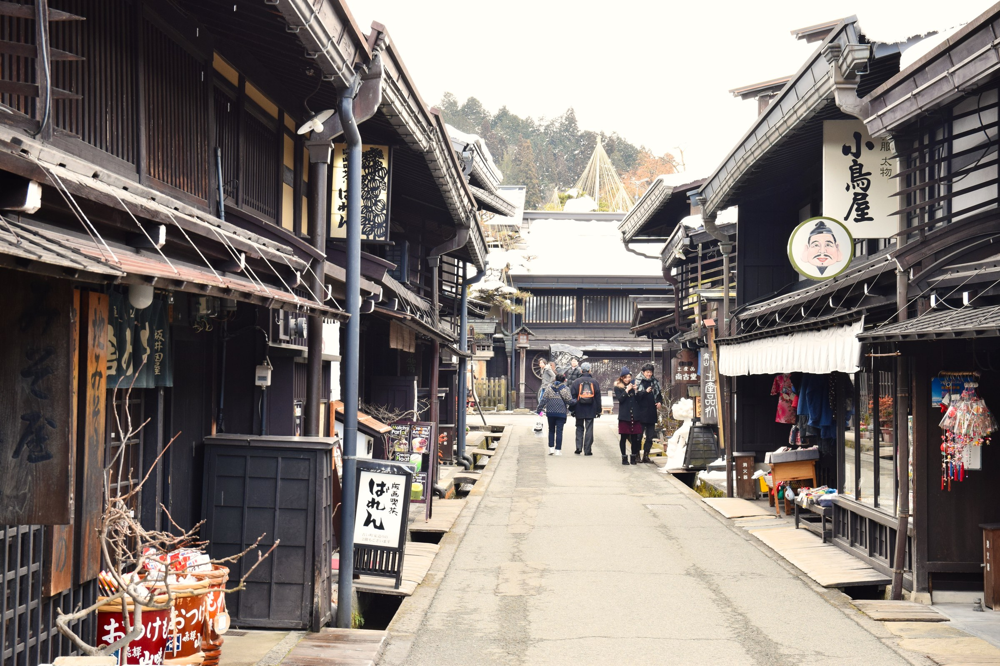
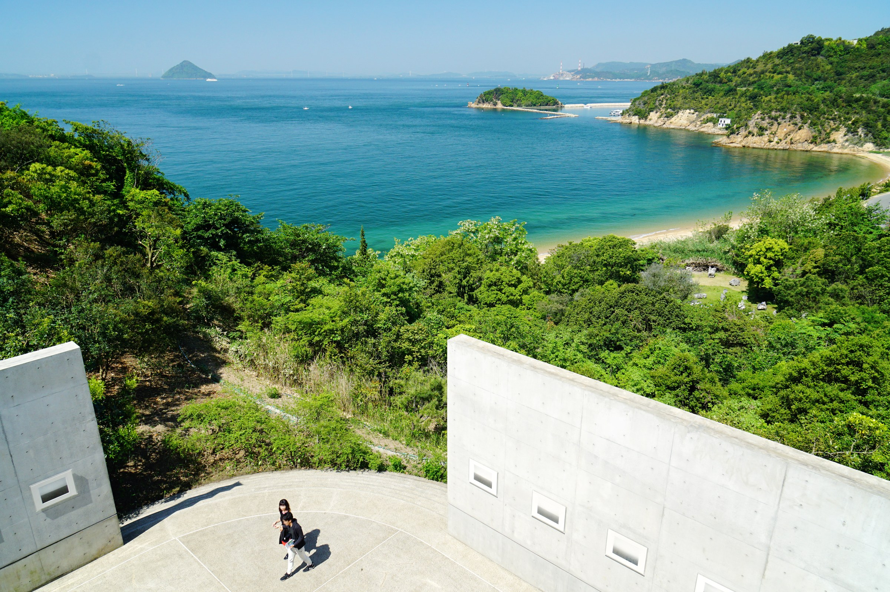
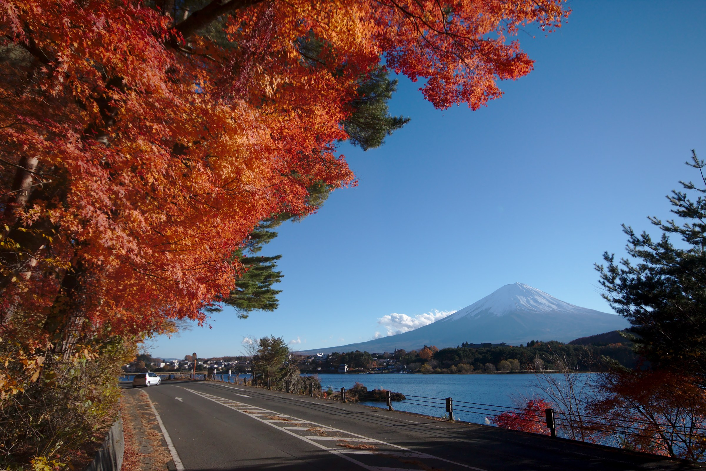

Craft & Culture Japan
匠と古都の日本
Tokyo, Hida Takayama, Shirakawa-go, Kanazawa, and Kyoto through craft, old towns, gardens, and workshops.
From $5,900per traveler
View Details
Small-group Japan journeys
Small-group Japan theme journeys for students, families, schools, and culturally curious travelers. Each route combines local support, clear supervision, hands-on experiences, and an easy-to-understand theme.
12-15 traveler small groups · Tour leader + local guide · Culture, anime, snow, art, and seasonal Japan
Featured programs
Each route has a clear theme, suitable season, traveler profile, and travel rhythm, helping different guests quickly find the right Japan journey.

匠と古都の日本
Tokyo, Hida Takayama, Shirakawa-go, Kanazawa, and Kyoto through craft, old towns, gardens, and workshops.

粉雪と温泉猿
A winter family-friendly route with four ski days, onsen towns, Nagano snow monkeys, and Tokyo shopping time.

アニメ王国の巡礼旅
Akihabara, Ghibli, Ikebukuro, Odaiba, Ghibli Park, Osaka, USJ, Nintendo, and pop-culture discovery.

神話の山陰と瀬戸内アート
A refined art and culture journey from Izumo mythology to Matsue, Iwami Ginzan, Naoshima, Teshima, and Kyoto.

東京ハロウィンと紅葉
A late-October route combining Disney Halloween, cosplay culture, digital art, Fuji views, and autumn leaves.
Trip themes
Whether guests care about culture, anime, winter snow, art and architecture, or seasonal events, they can choose a route from their own interests.
Hands-on workshops, old merchant towns, gardens, shrines, and Kyoto craft traditions for repeat travelers and culture-focused families.
Tokyo anime districts, Ghibli, Nintendo, USJ, character stores, digital art, and youth-friendly pop culture activities.
Clear ski support, winter safety, onsen recovery, snow activities, and enough Tokyo time for a complete family vacation.
Izumo, Matsue, Japanese gardens, Naoshima, Teshima, contemporary museums, and architecture-led interpretation.
Halloween, cosplay, Disney events, Fuji autumn leaves, and photography-rich moments built into a safe group rhythm.
Flexible versions for schools, clubs, studios, language programs, art departments, family offices, and private groups.
Route logic
From urban culture to regional craft, from snow-country experiences to art-island travel, these five routes show different sides of Japan.
Clear rhythm, supervised activities, reliable accommodation types, and enough free time to keep the trip human.
Themes can become learning outcomes: craft, media, environment, mythology, architecture, language, and social observation.
Trust and support
Each route includes clear pre-departure guidance, group rules, local support, and emergency communication, so theme experiences and safety management are both visible.
Recommended 12-15 traveler groups with a manageable pace, clear meeting points, and space for individual interests.
One consistent leader for the group, plus local support for interpretation, logistics, cultural context, and emergencies.
Pre-departure briefing, packing notes, activity rules, insurance guidance, and emergency contact protocols.
FAQ
International flights can be quoted separately. The trip pages are structured around land arrangements, local transport, accommodation, guides, activities, and selected meals.
The anime, snow, and Halloween routes fit teens and families especially well. Craft and art routes also work for adults, schools, and custom groups.
Yes. Each route can be customized with pre-trip briefings, reflection sessions, institutional visits, or theme-specific activities.
Ski, Halloween, Ghibli Park, USJ, Naoshima, Teshima, and other reservation-heavy experiences are best planned 6-9 months ahead.
Start planning
Share your preferred month, group size, age range, and interests. We will recommend a better-fitting Japan route.
Request Info